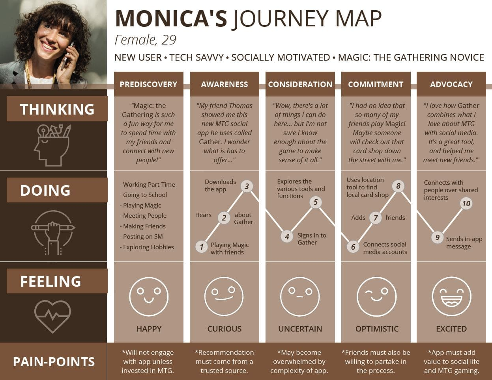
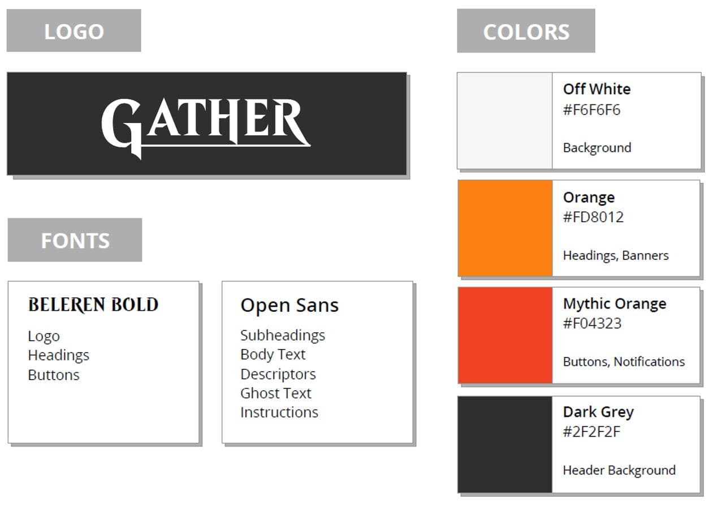

Gather: Social Networking for the Magic: The Gathering Community
Overview
Context
Magic: The Gathering (MTG) debuted as the first trading-card game in 1993 and was an instant hit. Nearly a quarter of a century later, the game boasts over 12 million players worldwide, with over 12,000 different cards published in 11 languages.
Learn more at magic.wizards.com.
Problem
Magic is a social game. As they say in the community, “it’s not about the Magic, it’s about the gathering.” So it is somewhat surprising that, although the community houses a robust and varied online presence, there is no existing social network for connecting players face-to-face. And despite Magic’s long-standing success, diversity remains an issue within the surrounding community.
Target Users
Teens and young adults (approximately 13-35 years old) with an emphasis on attracting diverse user groups (i.e., women and minorities).
Proposed Solution
Gather: a social media hub for the MTG community. The app will include social services such as profile creation, friending, and messaging, location services for nearby card shops and places to play, upcoming events listings, and a searchable cards database including features like a deckbuilder and wishlist.
User Research
Interviews
I conducted 8 interviews with a variety of potential users between the ages of 20-30 years old. Of these, three were male and five were female. Their experience with Magic ranged from “I’ve heard of it,” to “I’ve competed in tournaments.”
Take a look at the results:
Personas
Based on the participants of the user interviews and research on the Magic: the Gathering community, two personas were developed to represent the target user group. One (Jesse) embodies the current user population and the other (Monica) characterizes new and potential users.
Journey Maps
Next, a journey map was created to illustrate Monica's progeression through various touch-points during her interaction with the product. Although the map showcases an ideal journey, it also highlights potential pain-points at each step of the process.
Design Process
Flowchart
To get an idea of the requirements for the deisgn process, the first step was to create a map of the application's information architecture.
Wireframes
Simple mock-ups were created of each landing-page. Here are just a few examples...

Branding
The branding drew heavily from the fonts and colors used by Wizards of the Cost for Magic's branding, for consistency.
Prototype
I developed a semi-functional prototype using Adobe XD. Below are a few select pages from the original prototype, which would be modified after usability testing.
User Testing
Methodology
The tests were conducted remotely via UserTesting.com and consisted of:
- Think-aloud tasks
- Post-test interviews
- Screen- and voice-recorded feedback
View an example test here.
Findings
The Good: Users liked the concept of the app as a social media service for MTG players. They specifically liked the "easy-to-use navigation", "simple layout," location service, deck builder, image search, ability to connect with other social apps, and the in-app messaging function. Most users said they were highly likely to download the app and would recommend it to a friend.
The Bad: The biggest pain-point for users was confusion about how to use the in-app location services. Participants also noted that the social app connection feature should include a larger variety of social sites more common to the user-base (such as Discord and Reddit).
Revised Prototype
Try it out: